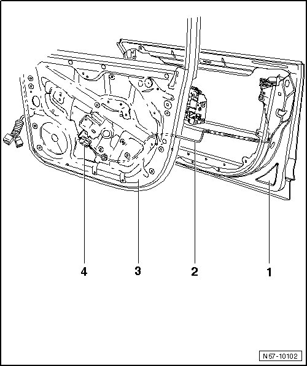

LEMON Manuals
: Even more car manuals for everyone: 1960-2025
Home
>>
Volkswagen
>>
2004
>>
Touareg (7LA) V6-3.2L (BAA)
>>
Repair and Diagnosis
>>
Body and Frame
>>
Doors, Hood and Trunk
>>
Doors
>>
Front Door
>>
Front Door Handle
>>
Front Door Exterior Handle
>>
Service and Repair
>>
Door Handle With Cable Routing (Kessy)
Door Handle With Cable Routing (Kessy)
Front Door
Door Handle with Cable Routing (Kessy)

1
Outer door panel
2
Wiring harness
•
Secured with three clips on the impact carrier.
•
Remove the
subframe
-
3
-.
3
Subframe
4
Connection (Kessy)